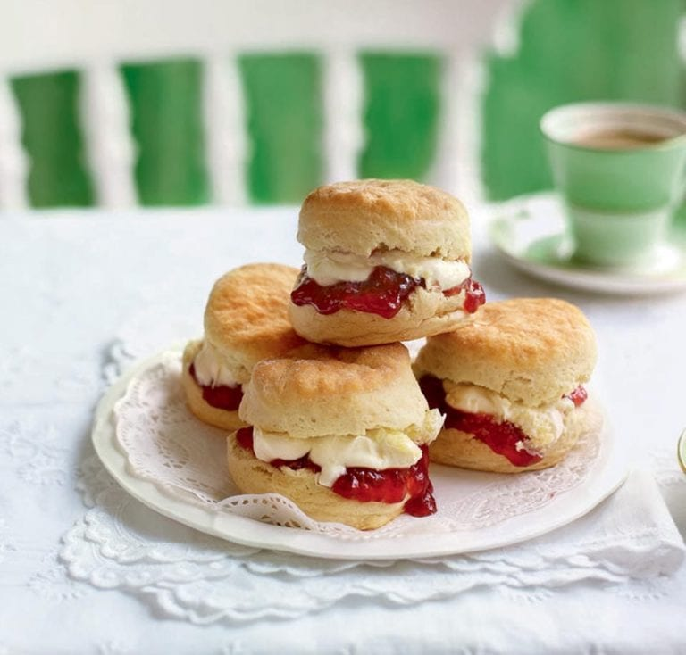

scones

Mouth Melting Traditional Scones with Jam
Easy and quick to prepare, serve in a traditional way with jam.
Ingredients
- 2 cups all-purpose flour
- 1/4 cup granulated sugar
- 1 tablespoon baking powder
- 1/2 teaspoon salt
- 1/2 cup unsalted butter, cold and cut into small pieces
- 2/3 cup milk (plus extra for brushing)
- 1 large egg
- 1 teaspoon vanilla extract
Optional Add-ins
- 1/2 cup raisins, currants, or dried cranberries
- Zest of 1 lemon or orange
Preparation
-
Preheat the Oven:
Preheat your oven to 425°F (220°C). Line a baking sheet with parchment paper.
-
Mix Dry Ingredients:
In a large bowl, whisk together the flour, sugar, baking powder, and salt.
-
Cut in the Butter:
Add the cold, cubed butter to the flour mixture. Using a pastry cutter, fork,
or your fingertips, work the butter into the flour until the mixture
resembles coarse crumbs.
-
Add Wet Ingredients:
In a separate bowl, whisk together the milk, egg, and vanilla extract.
Pour the wet ingredients into the dry ingredients and stir until just combined.
If you’re adding dried fruit or zest, gently fold it in now.
-
Form the Dough:
Turn the dough out onto a lightly floured surface and gently
knead it a few times until it comes together. Be careful not to overwork the dough.
Pat it into a 1-inch thick round.
-
Cut the Scones:
Use a floured round cutter (about 2-2.5 inches in diameter) to cut out
scones from the dough. Gather the scraps and repeat until all the dough is used.
Place the scones on the prepared baking sheet.
-
Brush with Milk:
Lightly brush the tops of the scones with a bit of milk. This will help them
brown nicely in the oven.
-
Bake:
Bake the scones in the preheated oven for 12-15 minutes, or until they are
golden brown on top.
-
Cool and Serve:
Allow the scones to cool on a wire rack for a few minutes. Serve warm or at
room temperature with clotted cream, butter, and jam.